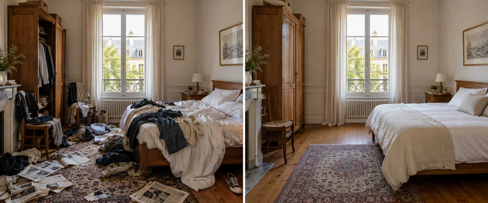
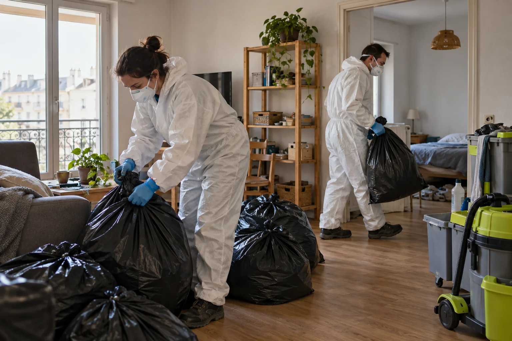

Locataire et bailleur face à un logement très encombré : droits et obligations
Ce que doit faire le locataire
Le locataire doit user paisiblement du logement et assurer son entretien courant. Un logement dégradé par négligence peut entraîner des retenues sur le dépôt de garantie ou des réclamations.
Cependant, la situation d’une personne en difficulté appelle d’abord à l’échange.
Ce que peut faire le bailleur
Le bailleur peut demander un état du logement, adresser un courrier, proposer une visite, orienter vers les services sociaux. Il ne peut pas entrer sans l’accord du locataire.
Si la situation est grave, il peut consulter un avocat, l’ADIL ou une association pour connaître les démarches.

Quand le logement devient insalubre
Si l’état du logement pose un risque pour la santé, la mairie peut être saisie. Des mesures peuvent être imposées pour rétablir des conditions de vie correctes.
Le nettoyage et la désinfection font partie des solutions.
Le dépôt de garantie et les frais
À la fin du bail, les frais de remise en état peuvent être déduits du dépôt de garantie, selon l’état des lieux et le contrat. Les factures détaillées et photos avant/après sont utiles pour justifier.
En cas de désaccord, un conciliateur peut aider avant d’aller plus loin.

Faire intervenir une entreprise
Avec l’accord du locataire ou une autorisation adaptée, nous vidons, nettoyons et désinfectons le logement. Nous remettons un devis, une facture et des photos, qui peuvent servir de pièces au dossier.
Nous ne donnons pas d’avis juridique : pour les droits de chacun, adressez-vous à un professionnel du droit.
Syndrome de Diogène nettoyage à Paris 19e : nous contacter
Que ce soit pour un syndrome de Diogène nettoyage, un entreprise de nettoyage Diogène ou un nettoyage syndrome de Diogène, nous intervenons à Paris 19e (75019) avec discrétion : camion sans logo, tenue neutre, bordereau d’élimination des déchets.